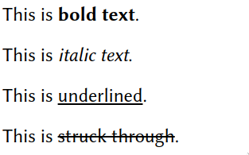

We now have a webpage that's actually on the real-live internet! You've already made it! Now the only issue is putting what you want on your website.
In this little series, we'll overview the basics of HTML and CSS, the two important languages that will allow you to make a stylish multi-page website. We will start with HTML.
HTML
HTML is the hypertext markup language. It is the "language" that all webpages are written in so that all browsers can read and display them properly.
A markup language is not the same as a programming language: Programming languages specify orders for a computer, while markup languages are ways of specifying the styling of text. Markup languages are necessary because computers run on mere text, not colors, sizes, headers and other styling things.
Let's understand what HTML is.
In a previous article, we put this text in your website's index.html.
Paragraphs
Note how this HTML file appears as a webpage:
|

|
The content between the <p> and </p> tag(s) is formatted as different paragraphs.
If you don't use these <p> tags, the text will not be formatted as separate paragraphs even if you write it as
multiple lines.
Observe if we add lines to the end of this file:
|

|
This will seem strange at first, but this is the use of HTML as a markup language: it allows you to style your document with tags and write it in whatever way is convenient.
Let's learn more about what HTML can do.
Headings
In addition to paragraphs (<p>), we can specify headings with inside <h1></h1> tags.
Heading tags are for your page's title and section headings in the document:
<h1></h1>– Main and largest headings<h2></h2>– Subheadings (smaller)<h3></h3>– Sub-subheadings (yet smaller)<h4></h4>– Etc., etc.
|

|
A preview to CSS
It is very important to use headings like this for your pages.
Notice that on this website, headings come in different colors, text-alignment and sizes for emphasis.
If we use these heading tags, when we clear CSS, we can easily style all <h2>, for example,
to be the size and color and alignment we want.
Text formatting
HTML can also be used to do text formatting. We can make bold, italic, underlined or struck through text with more HTML tags:
|
 |
Semantic Tags
While <b></b> and <i></i>
do exist, it's actually better not to use them directly in text.
Try using <strong></strong> instead of <b></b> and <em></em> instead of <i></i>.
By default, they will look exactly the same.
You complain that they require more key presses, but it's thought to be a very bad idea to modify lower-level tags with CSS directly.
Note that some bold words on this site have different color for emphasis.
This is a setting set via CSS for all <strong> tags.
It would not be a good idea for us to use this for <b>, since there might be a non-colored situation we want to occasionally use it in.